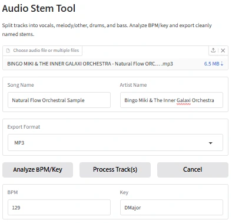

01 / INPUT
Batch tracks
Upload one track or a group of tracks and run the same workflow across all of them.
SOFTWARE DEVELOPMENT / AUDIO
A Python workflow that turns a repetitive music-production task into one process: upload tracks, estimate BPM/key, separate stems with Demucs, rename the outputs, and package the results for download.

01 / INPUT
Upload one track or a group of tracks and run the same workflow across all of them.
02 / ANALYZE
librosa estimates tempo and chroma is compared against major/minor key profiles.
03 / SEPARATE
Demucs produces vocals, drums, bass, and other — presented here as melody/instruments.
04 / EXPORT
Files are renamed with BPM, key, and stem type, then bundled into one downloadable ZIP.
ARCHITECTURE
Gradio handles the interface. Python coordinates analysis, subprocess execution, temporary files, cancellation, and export packaging.
LOCAL APPLICATION
The application runs locally on Windows instead of depending on a third-party compute host. Your audio stays on your own computer while Python, Demucs, librosa, and FFmpeg handle the processing.
Requirements: Windows 10/11, Python 3.11, and FFmpeg. The included setup script installs the required Python packages into a local virtual environment.